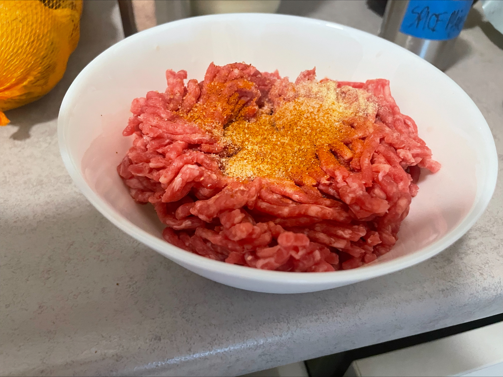

Cooking meat can be a challenge, especially if you don’t pay attention to the cut you’re using. Lean cuts like chicken breasts or pork loin are notorious for drying out if not cooked properly. One of the most common pitfalls is overcooking the meat, which leads to tough, dry results. Relying solely on visual cues can be misleading; without a meat thermometer, you might think it’s done when it’s actually overcooked. Also, skipping the resting period after cooking is a mistake; cutting into meat right away can cause all those precious juices to escape.
Start by choosing the right cut of meat, opt for fattier cuts like rib eye or chicken thighs to help retain moisture. Marinate the meat beforehand; acidic ingredients like vinegar or lemon juice work wonders to tenderize and infuse flavor. Invest in a good meat thermometer to ensure you're cooking to the right temperatures, around 63°C for pork and beef, and 74°C for chicken. After cooking, let the meat rest for a few minutes before slicing; this helps the juices redistribute throughout, resulting in a juicier, more flavorful dish. Finally, consider moist cooking methods like braising or slow cooking, which can keep the meat tender and delicious. And REMEMBER, the liquid that comes out is JUICE not blood, you don’t have to cook it more after you see the juice